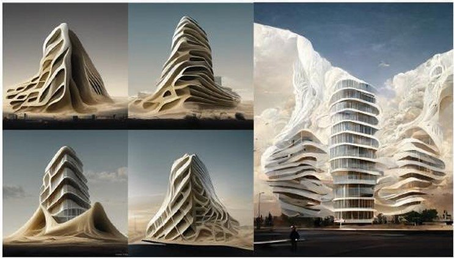
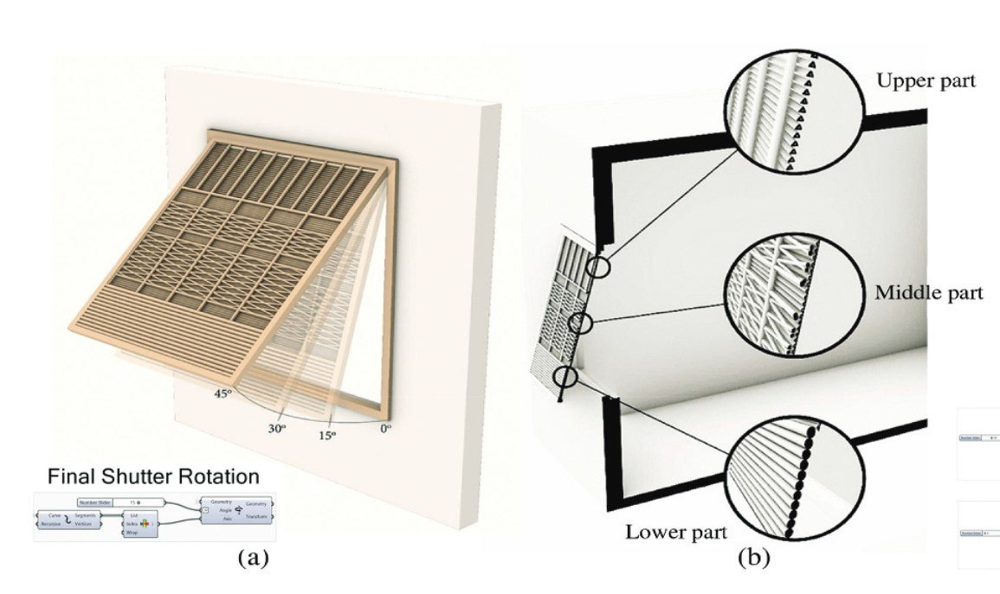
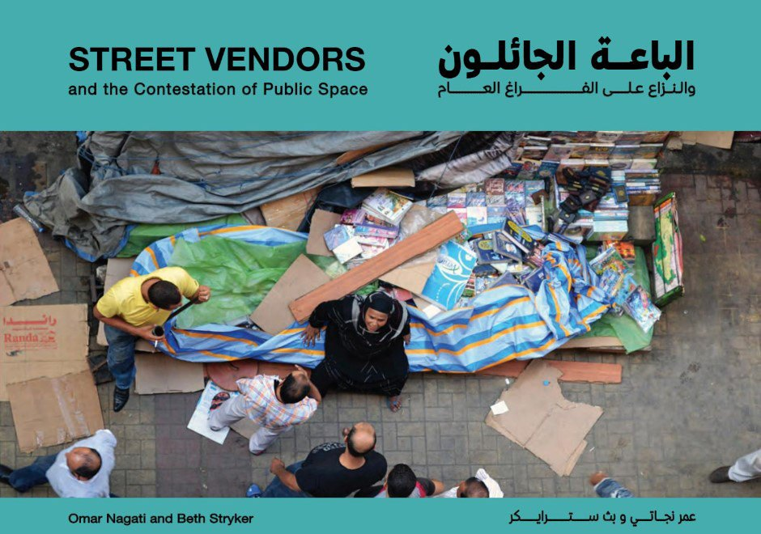
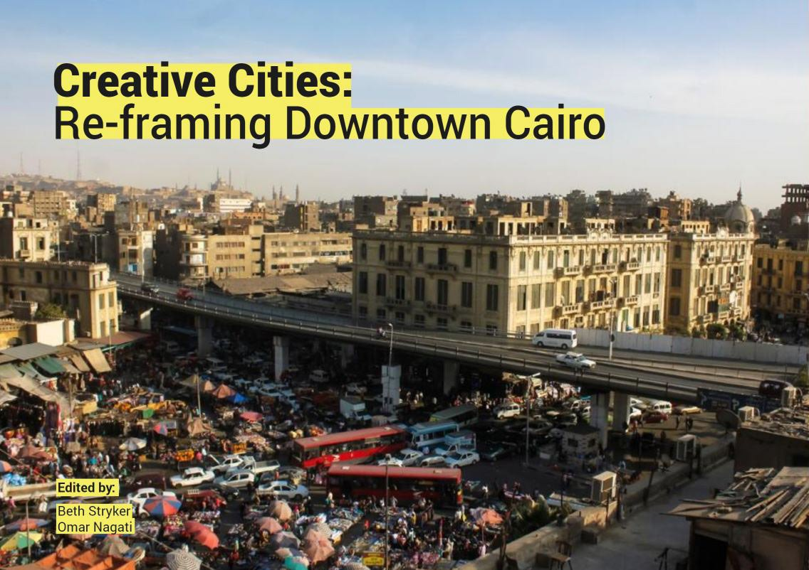
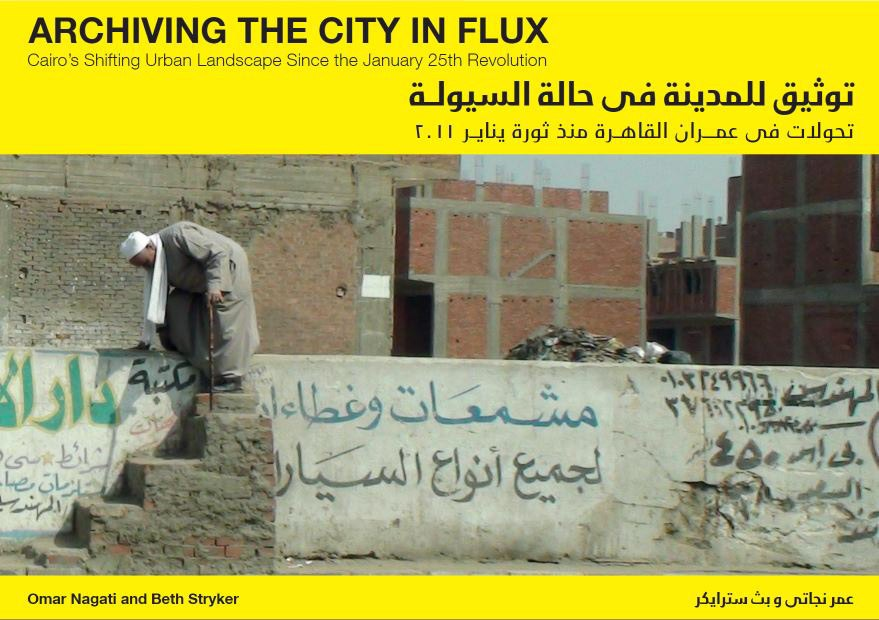
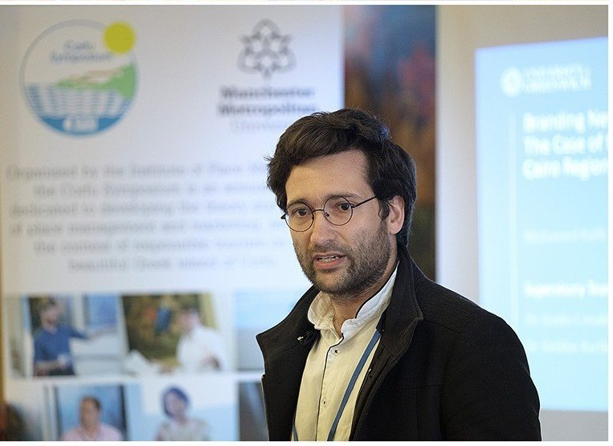

/ 03 — PUBLICATIONS
Research on cities,
tools & teaching.
Peer-reviewed papers and edited urban studies — spanning artificial intelligence in design education, climate-responsive facades, and the informal life of public space in Cairo. Each entry links to the full document.

/ Mohamed Rafik Sadek · Nermine Abdel Gelil Mohamed
Artificial Intelligence as a pedagogical tool for architectural education: what does the empirical evidence tell us?
Artificial Intelligence applications in arts and design have grown in popularity in recent years, with numerous commercial and open-source programs able to convert a textual description of a design or context into original content images. While many research projects have tackled AI use in architecture since 2015, there is a lack of empirical evidence of its use in architectural education as a tool for concept generation.
An experimental design course ran in Fall 2022, where 34 students used AI programs in the conceptual phase to produce original images from narratives to help generate building concepts. Their work is compared against a control group of 50 students using more traditional conceptual methods on a similar project in the same semester. The paper measures the effectiveness of AI tools in increasing creativity in form-finding, and — drawing on recent architecture learning theories and pedagogies — critiques the approach to offer further insight into AI’s role in architecture education.
/ Nermine Abdel Gelil Mohamed · Eslam Hamid Abd El-Rahman · Mohamed Sadek
A smart green mashrabiyya-shutter design for residential applications in Egypt
The revival of traditional latticework mashrabiyya is continually urged across the Middle East and North Africa, since it optimally balances environmental, social and aesthetic functions — yet its material and craftsmanship costs and inflexibility remain significant barriers. This study offers a preliminary design for a green, smart mashrabiyya-like shutter, responsive to climatic conditions and privacy needs in Egypt and manufactured with palm midribs, a waste material abundant in the MENA region through annual trimming.
The design proceeds in three steps: a static model that maintains the basic socio-environmental needs; dynamic functions modelled in Grasshopper/Ladybug that standardise slats and set visibility and adjustable parts; and integrated smart controls based on comfort indexes and indoor climatic readings. A simple circuit of sensors, actuators and a microcontroller computes indoor weather data against thermal, daylight and wind comfort indexes, then makes automated decisions to regulate the shutter’s opening angle and the openness between slats — with distinct daytime and nighttime modes.


/ CLUSTER — Cairo Lab for Urban Studies
Street Vendors and the Contestation of Public Space
This study documents a time of rapid political and urban change in Cairo, between 2011 and 2015. It takes the issue of street vendors as an entry point into broader questions about who owns, controls and uses public space.
Contributing to wider research on informal economies in Cairo and the right to the city — while focusing on the spatial manifestation of these practices — it builds on a systematic documentation and analysis of street vendors in downtown Cairo to propose potential design and policy recommendations.
/ CLUSTER — Conference proceedings
The Creative Cities: Re-framing Downtown Cairo
This conference invited international examples of successful creative-city models of relevance to the future development of downtown Cairo, and — in dialogue with local stakeholders — considered the role culture can play as a catalyst for development.
Looking critically at the changes of recent years, and building on Cairo’s wealth of urban-history and contemporary studies, it emphasised comparative and interdisciplinary approaches to public space, heritage and urban culture, the revitalisation of Downtown amid gentrification and securitisation, and questions of urban governance.


/ CLUSTER — Cairo Lab for Urban Studies
Archiving the City in Flux
This study examines new modes of informal urban intervention in Cairo’s public space that emerged after January 2011, when a breakdown of the security apparatus produced a state of unprecedented fluidity in the city.
Offering a preliminary account of the city as it evolved over this two-year period — focused on public space and emerging urban orders — it draws lessons from informality towards alternative design guidelines and planning policies.
/ Mohamed Rafik Sadek · Guido Conaldi · Deborah Bartlett
Branding New Towns: the case of the Greater Cairo Region, Egypt
Place-identity-driven branding is used in many cities to set the ground for a dynamic redefinition of identity based on place image and place culture. Yet there is a lack of knowledge in the field of place identity, particularly for new-town developments in Egypt. This study asks how place identity influenced occupancy, and how place branding might be a powerful tool to address it — using Public Participation GIS to map landscape values as a measure of place identity, a link not yet made with newly developed urban settlements.
Urban growth in the Greater Cairo Region often happens at the expense of scarce, productive arable land, so the vision for sustainable development is constrained between two priorities: re-developing existing urban areas, and planning new desert cities beyond the fertile Nile Valley. Despite a significant share of national development expenditure spent on infrastructure, the desert new towns have reached less than half their occupation target. The study collects data to refine place-identity theory for new towns as a basis for appropriate place branding.
